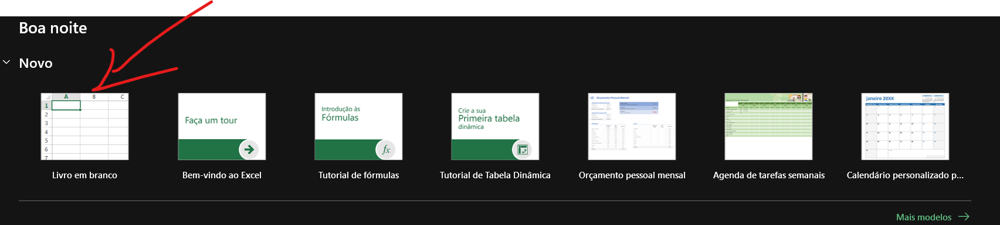
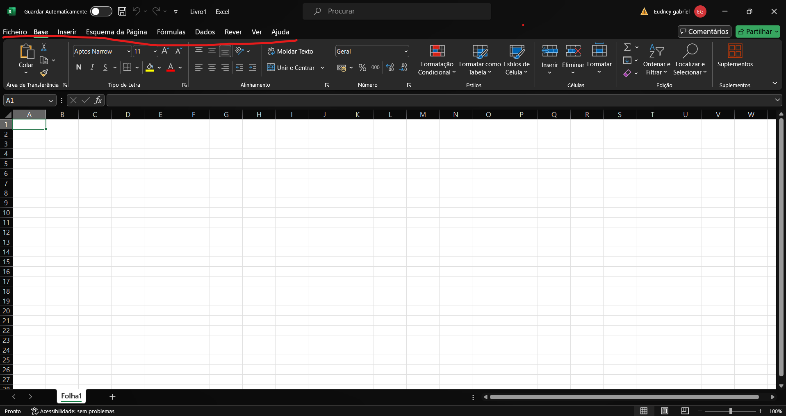
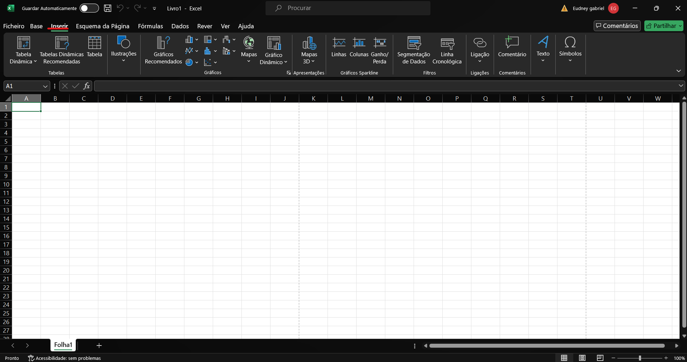
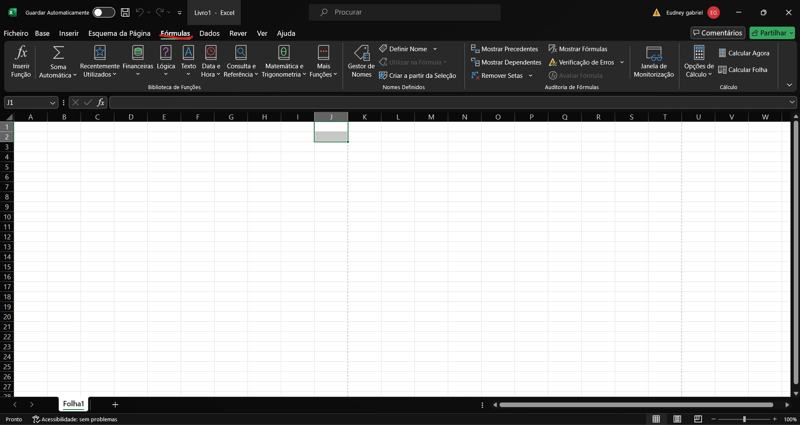
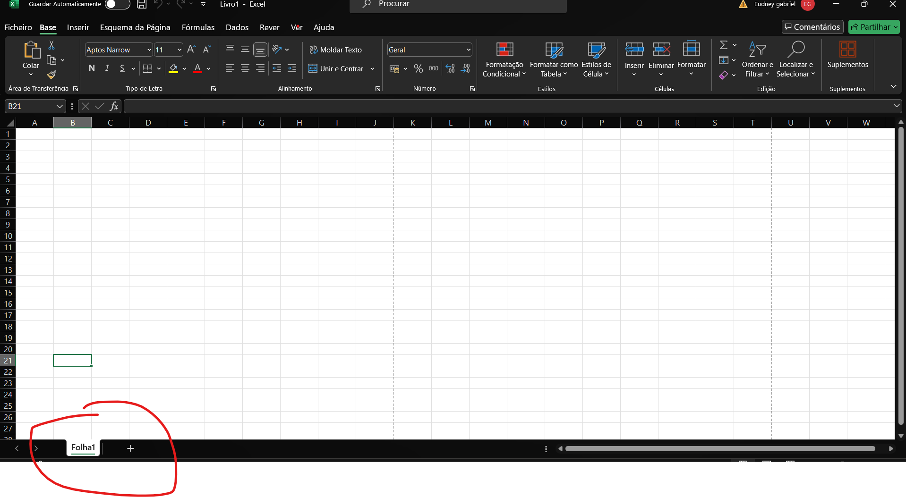

1.Paço
Abra o excel e abra uma pagina em branco ou nova pagina

2.Paço:Conhecendo a Interface do Excel
Barra de Ferramentas de Acesso Rápido Localizada no
topo da janela, permite acesso rápido a comandos como Salvar, Desfazer e
Refazer.

Faixa de Opções:Abaixo da barra de ferramentas de
acesso rápido, contém várias guias (Arquivo, Página Inicial, Inserir,
etc.), cada uma com seus próprios grupos de comandos.

Área de Trabalho (Planilha): Onde você insere seus
dados. É composta por células organizadas em linhas (numeradas) e
colunas (letradas).

Barra de Fórmulas: Localizada acima da planilha, exibe
o conteúdo da célula selecionada e permite a edição de fórmulas.

Guia de Planilhas: Localizada na parte inferior da
janela, permite navegar entre diferentes planilhas dentro do mesmo
documento.

3.Paço: Funções Básicas
1.Inserir Dados:
Clique em uma célula e comece a digitar para inserir dados. Pressione
Enter para finalizar a inserção na célula.
2.Formatar Células:
Use a guia "Página Inicial" para alterar o formato da célula, como
fonte, tamanho, cor, alinhamento, etc.
Passo 4: Criar um Gráfico
1.Selecionar Dados:
Selecione o intervalo de dados que deseja usar no gráfico.
2.Inserir Gráfico:
Vá para a guia "Inserir", selecione o tipo de gráfico desejado (Coluna,
Linha, Pizza, etc.) e clique para inserir.
3.Personalizar Gráfico:
Use as ferramentas de design e formatação que aparecem quando o gráfico
está selecionado para personalizar seu gráfico.
Passo 5: Salvar e Compartilhar
1.Salvar:
Clique em "Arquivo" > "Salvar Como" e escolha o local onde deseja salvar
o arquivo. Nomeie o arquivo e clique em "Salvar".
2.Compartilhar:
Você pode compartilhar seu arquivo enviando-o por e-mail, salvando em um
serviço de nuvem como OneDrive ou Google Drive, ou exportando como PDF.